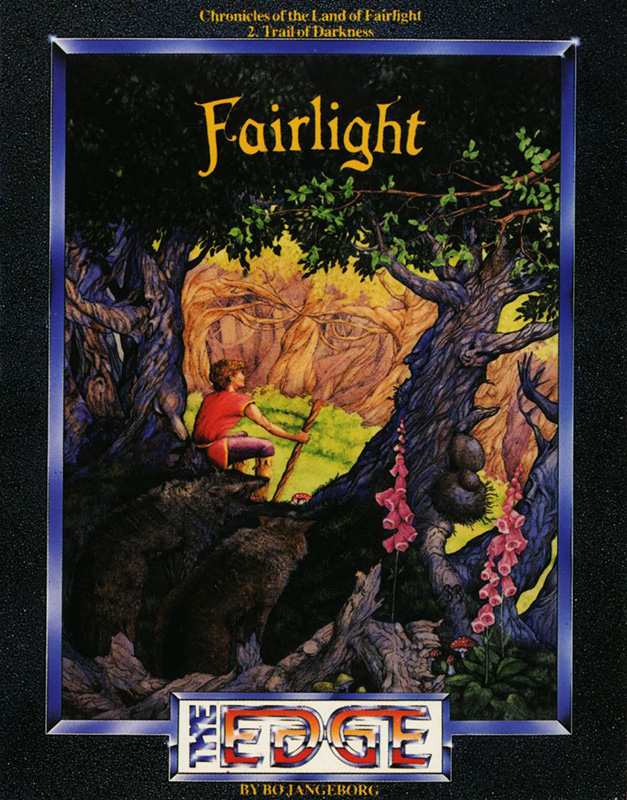
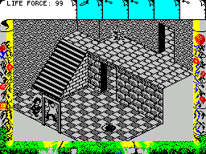
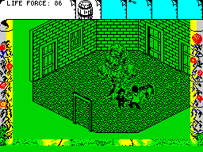

Fairlight II


{kind=link}

| Publisher: | The Edge |
| Price: | £9.95 |
| Year: | 1986 |
| Source: | CRASH, Issue 36 |
About a year after the first Fairlight stormed the Spectrum games market, Bo Jangeborg and the team from The Edge have come up with the sequel.

be some way to get out with all these
barrels lying around
The land of Fairlight has been decaying over many thousands of years, ever since the good King Avars who ruled over the land was murdered. When the King was slain, Fairlight slipped into the gloom and despair in which it is still trapped today. However, legend tells of a wizard who will one day be born to free the land from despair. In the original Fairlight, your character, Isvar was apparently called and told to seek out the book of Light which will help bring Fairlight back to its former glory. However, in the sequel it becomes apparent that you were cruelly deceived. Instead of Segar you in fact gave the Book of Light to the Dark Lord who can now harness its power to bring even more gloom and despair to the stricken land.
Bo Jangeborg has incorporated 3D graphics like Fairlight. Each object has its own mass, and obeys the laws of physics and gravity. For instance, heavier objects like large boulders take more effort to pick up than say, a small piece of food. Heavier objects will also travel less far when they are pushed than lighter ones. Isvar is informed in no uncertain terms if an object which he’s trying to lift is actually too heavy.

lugging a barrel around, Isvar can
still put the meanie to the sword.
Isvar is the character you play in Fairlight II. He must roam around the outside and inside of the Dark Tower, facing the foes and guards who are waiting to stop him in his mission. After all, if Isvar mucks things up this time as well, there may be no salvation for Fairlight.
Once again, Isvar has five pockets which he can use to store useful objects in. Isvar starts out the game with 99 energy points and these are shown ticking down numerically by a counter at the top of the screen. Food will buck up his energy levels if they get too low.
Isvar must watch his step when he’s trolling around the outside of the tower. Sheer cliffs shelve away into infinity. This power diminishes after encounters with dwarves, guards, killer wolverines and various other nasties who patrol the outside and inside the tower.
When Isvar leaves one location and moves on to another there is a short pause while the new location flashes, ready drawn onto the screen. Unlike the first version, the screen doesn’t go black for a split second, but behaves more like a standard flick screen arrangement.
CRITICISM
“Fairlight II is far too much like the first game, and even though it is faster, the second game is quite boring to play after only a few games. Basically, I think that Fairlight only impressed me and many other people because of its extremely detailed graphics but the game is much too ’ard for the basic Spectrum owner (well me at least!). The problems in Fairlight II are more obscure than the first and it takes much longer to get into than the first. A decent follow up to Fairlight, but nothing different.”
“I hated Fairlight so I can’t really be expected to be over the moon about this, and to tell you the truth I’m not. As far as I can see this is no real step forward from the original, there is a larger playing area and the graphics are a lot more varied but not essentially prettier. The game plays in a very similar way to the stacks of other Filmation games although the way in which different objects behave is a cute touch. If you are a fan of Fairlight then no doubt this will appeal, if not then I’d stay well clear of this.”
“Oooh! Look at these graphics! Bo Jangeborg is certainly capable of producing something worthwhile, as this more than proves. The only gripes that I’ve got are the time it takes to flick screens, and the speed with which the character moves when there are several moving items on screen. The inertia and differing gravities of objects varying in weight is finely produced, and the whole game is one that’s well worth getting.”
COMMENTS
| Control keys: | V-P up and right, G-L down and left, Q-T up and left, A-G down and right, SYM/SPACE jump, B-M fight, X-V pick up, CAPS-Z drop, 1-5 select objects, 6-7 use selected object, SYM+SPACE pause game |
| Joystick: | Kempston, but only to control the movements of Isvar, everything else must be carried out via the keyboard |
| Keyboard play: | Hard to get the hang of initially due to the number of keys used in the game, but very smooth once this has been overcome |
| Use of colour: | Monochrome |
| Graphics: | Fine detail |
| Sound: | Atmospheric tune at the beginning, but no sound during the actual game |
| Skill levels: | One |
| Screens: | 160 |
| General rating: | Good, but nothing new |
| Use of computer: | 88% |
| Graphics: | 92% |
| Playability: | 75% |
| Getting started: | 80% |
| Addictive qualities: | 80% |
| Value for money: | 82% |
| Overall: | 81% |